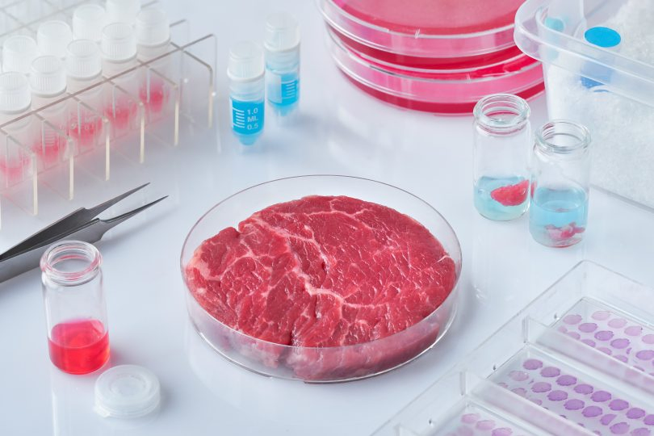

Compared to their conventional counterparts, cellular agriculture products have fewer environmental impacts, a safer, purer product, and a more consistent supply.
This is because the product is being produced in safe, sterile, controlled conditions.
Another exciting aspect of cellular agriculture is the ability to design and tune what you are making. For instance, you could make meat with fewer saturated fats and more unsaturated fats, or you could make leather of different thicknesses. You could make milk without lactose, or eggs without cholesterol.
Despite the benefits and opportunities presented by cellular agriculture, it remains an underfunded area of research.